Current Research Associates
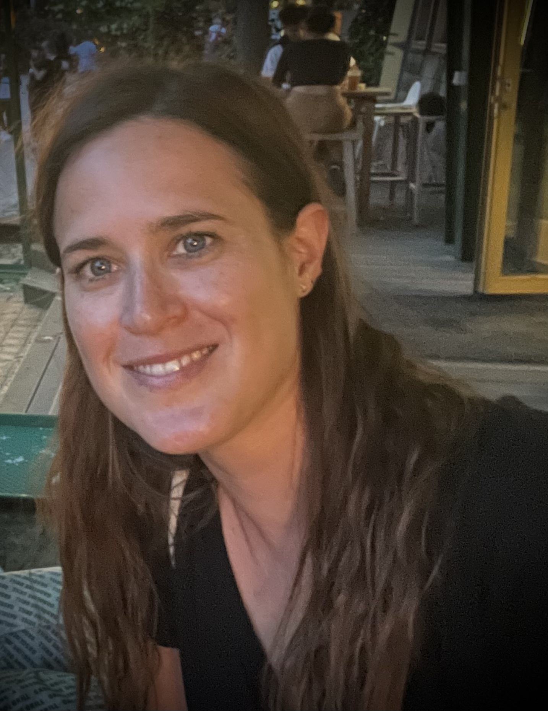 |
Amandine Pierrot Amandine is a Research Associate funded by the EPSRC-funded NeST Programme Grant. She is working on new models and analysis techniques for dynamic network data, applied to challenges arising from industry. |
Current PhD students
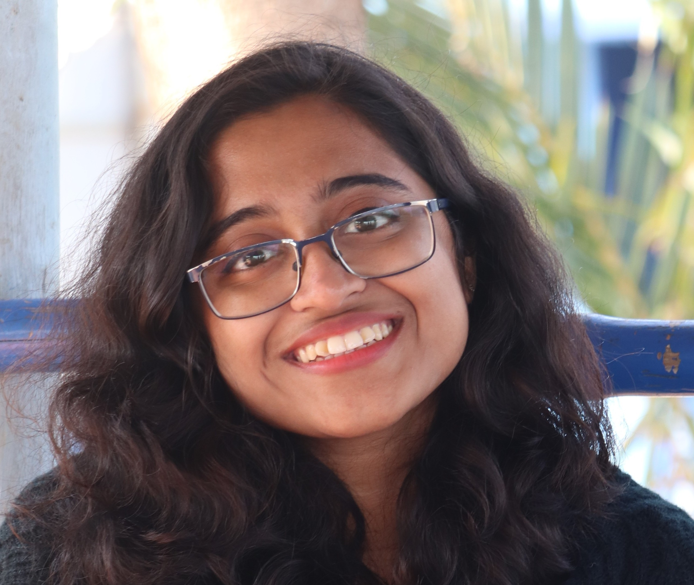 |
Anusha Chaudhury (started 2025) Anusha is funded by the Mandy Norton Scholarship for the University of Bath and is working on developing new tools for network time series, aligned to the EPSRC-funded NeST Programme Grant. |
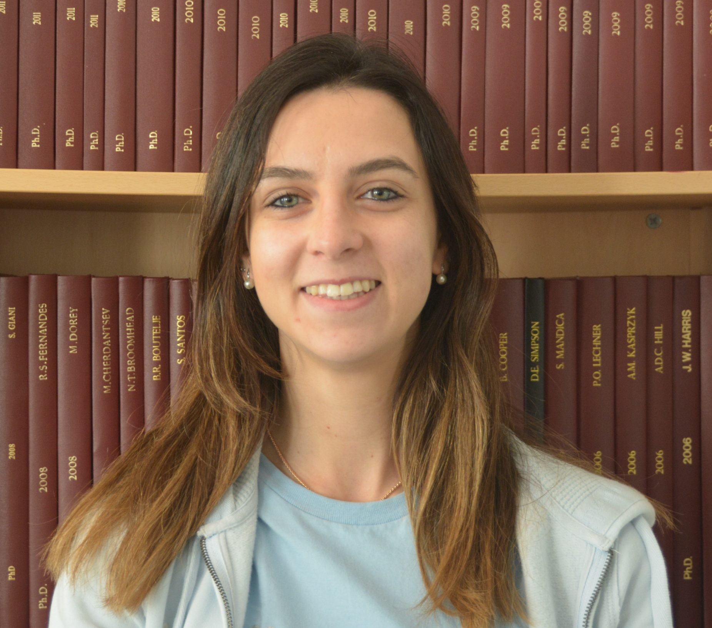 |
Chiara Boetti (started 2023) Chiara is funded by the Centre for Doctoral Training in Statistical Applied Mathematics (SAMBa CDT) and is working on developing new models and associated inference methods for network-structured data, aligned to the EPSRC-funded NeST Programme Grant. |
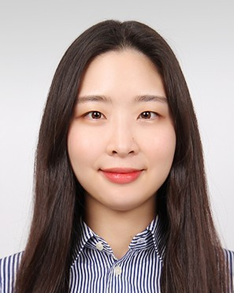 |
Sinyoung Park (started 2022) Sinyoung is funded by the Centre for Doctoral Training in Statistical Applied Mathematics (SAMBa CDT) and is working on developing new tools in graph-based signal analysis. She is co-supervised by Sandipan Roy. |
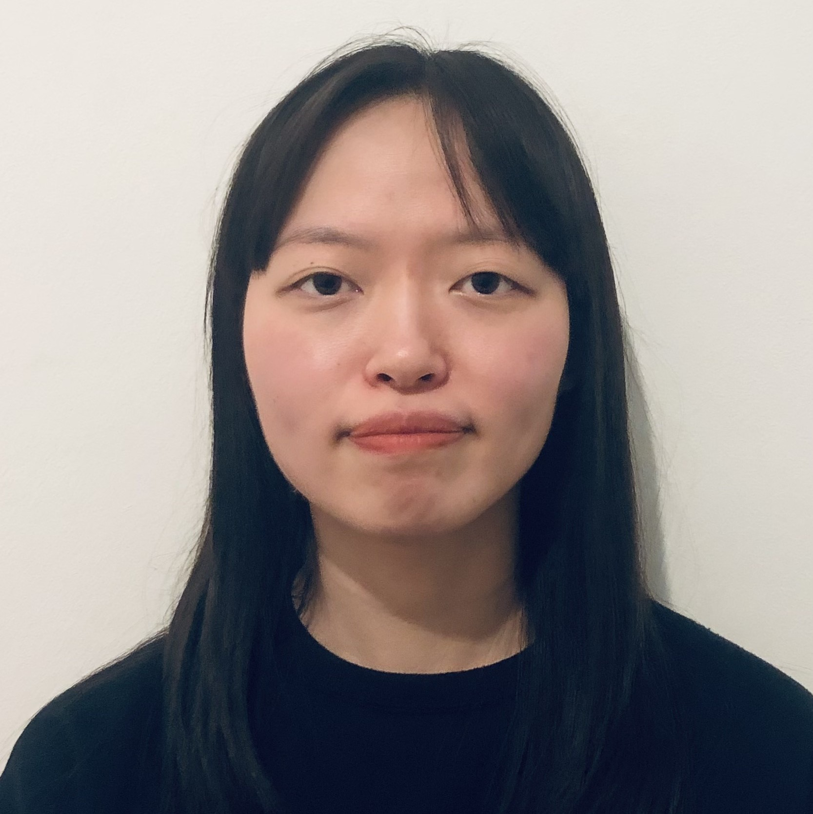 |
Na Eun Kim (started 2022) Na Eun is funded by an industrial CASE award with BT and is developing new Bayesian methodology to tackle predictor selection and model choice challenges for industrially-motivated data analysis problems in the online setting. She is co-supervised by Alex Cox. |
| Alex Fritot Alex is working on developing novel approaches to problems arising in fuel cell development, including new physical (PDE) models, Bayesian parameter estimation and experimental design and is part-funded by AVL. Alex's primary supervisors are Tom Fletcher and Chris Brace. |
Past Research Associates
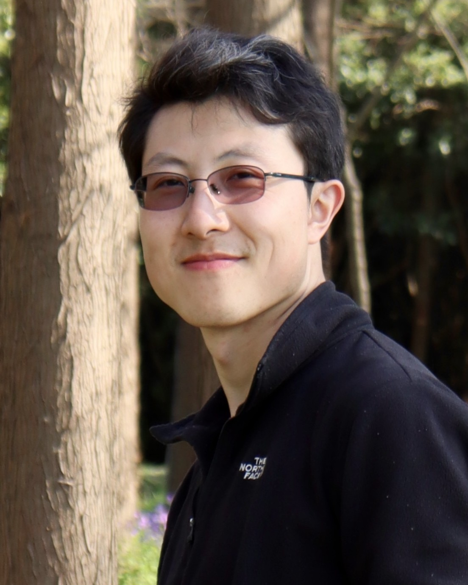 |
Cangxiong Chen Cangxiong is a Mathematical Innovation Research Associate at the Institute for Mathematical Innovation (IMI) at the University of Bath. We worked together on a EPSRC-funded project developing new methods for differential privacy in machine learning, applied to the creative industry. The project was in collaboration with Clarice Poon (University of Warwick) and Neill Campbell (University of Bath), and working with the British Board of Film Certification. |
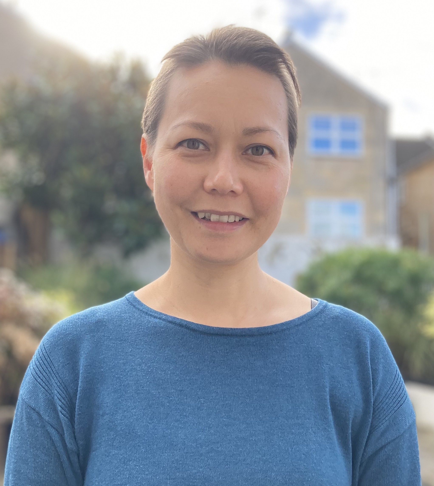 |
Emiko Dupont Emiko worked on the EPSRC-funded New Horizons project Multiscale Machine Learning at the Edge, which aimed to develop more efficient machine learning algorithms for resource-constrained settings. Emiko has now joined the department of Mathematical Sciences at the University of Bath as a Lecturer in Statistics. |
Past PhD students
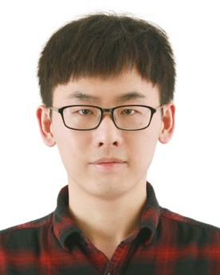 |
Ruchen Liu (completed 2026) Ruchen worked on developing novel approaches to differential privacy, motivated by problems arising in the healthcare setting. Ruchen was part-funded by the Centre for Doctoral Training in Statistical Applied Mathematics (SAMBa CDT), a University of Bath Global Doctoral Scholarship and Novartis (Basel, Switzerland). He was co-supervised by Sandipan Roy. Ruchen has recently joined the University of Newcastle as a Research Associate. |
| Xinle Tian (completed 2026) Xinle's project focussed on sparse statistical modelling and inference in high-dimensional situations, motivated by neuroscience applications. He was co-supervised by Sandipan Roy and Alex Gibberd. Xinle now works as a data scientist at Novartis. |
|
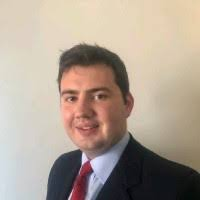 |
Henry Elsom (completed 2026) Henry worked on new statistical methods for dealing with nonstationary extreme values. Henry's primary supervisor was Christian Rohrbeck. |
| Josh Inoue (completed 2025) Josh's thesis developed novel approaches to problems arising in spatio-temporal modelling. Josh was part of the Centre for Doctoral Training in Statistical Applied Mathematics (SAMBa CDT) and was co-supervised by Sandipan Roy. |
|
| Melina Del Angel Martinez (completed 2025) Melina worked on a project co-funded by KiActiv and developed new health indicators and measures of success of interventions using physical activity profiles. She was supervised jointly by Dylan Thompson from the Department of Health at the University of Bath. Melina is now Data Science Manager at Pfizer Mexico. |
|
| Jordan Taylor (completed 2025) Jordan worked on developing computationally efficient algorithms for sparse modelling of high dimensional genetic data. Jordan was based within the SAMBa Centre for Doctoral Training. He was co-supervised by Sandipan Roy (Bath) and Lauren Cowley (Biology and Biochemistry, Bath). Jordan now works for GSK. |
|
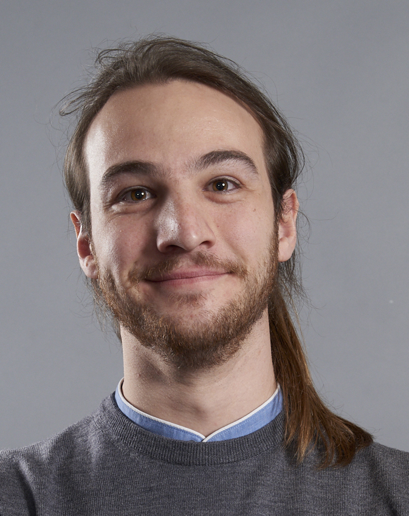 |
Gianluca Audone (completed 2025) Gianluca worked on developing time series models and tools for analysis of underwater acoustic data, to quantify effects on marine life and the climate. Gianluca was co-supervised by Chris Budd (Bath) and Philippe Blondel (Physics, Bath). Gianluca's studentship was part-funded by the National Physical Laboratory (NPL). He is now a postdoctoral researcher at the University of Southampton. |
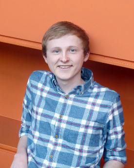 |
Euan McGonigle (completed 2020) Euan's project involved developing new methodology for nonstationary time series. He was funded by the Numerical Algorithms Group (NAG) and the Smith Institute, and was co-supervised by Rebecca Killick (Lancaster University). Euan has now joined the department of Mathematical Sciences at the University of Southampton as a Lecturer in Statistics. |
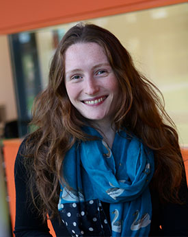 |
Kathryn Turnbull (completed 2020) Kathryn's thesis investigated developing efficient sequential Monte Carlo methods for latent space network models and hypergraphs. Kathryn was co-supervised by Chris Nemeth, Simon Lunagomez (Lancaster University) and Tyler McCormick (University of Washington). |
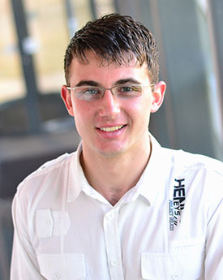 |
Aaron Lowther (completed 2019) Aaron was funded by a CASE award with BT Applied Research. His thesis title was Multivariate response predictor selection methods with applications to telecommunications time series data. He was co-supervised by Paul Fearnhead (Lancaster University) and Kjeld Jensen, BT Applied Research. |
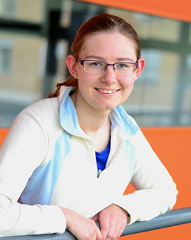 |
Chrissy Wright (completed 2019) Chrissy's thesis is on time series modelling of traffic delays, Modelling and inference for the travel times in vehicle routing problems. She was co-supervised by colleagues at Lancaster University: Konstantinos Zografos, Nikos Kourentzes, and Jon Tawn. |
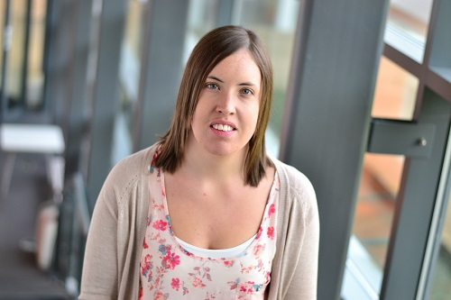 |
Rebecca Wilson (completed 2019) Rebecca completed her PhD entitled Novel methods for distributed acoustic sensing data, co-supervised by Idris Eckley, Lancaster University and Tim Park, Shell. Rebecca was partially supported by Shell. |
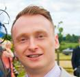 |
Mark Bell (completed 2015) Mark completed his PhD entitled Methods for enhancing system dynamics modelling: state-space models, data-driven structural validation & discrete-event simulation, co-supervised by Peter Neal, Dave Worthington, Lancaster University and Kjeld Jensen, BT Openreach. Early supervision was also given by Dennis Prangle (now University of Bristol). Mark was sponsored by a CASE award with BT Openreach. |